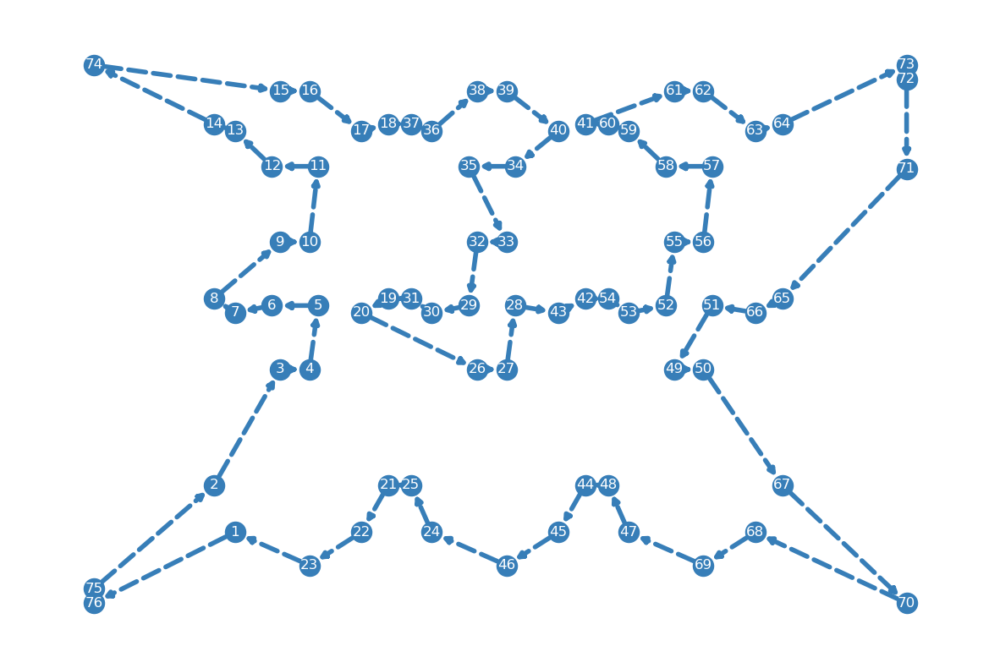
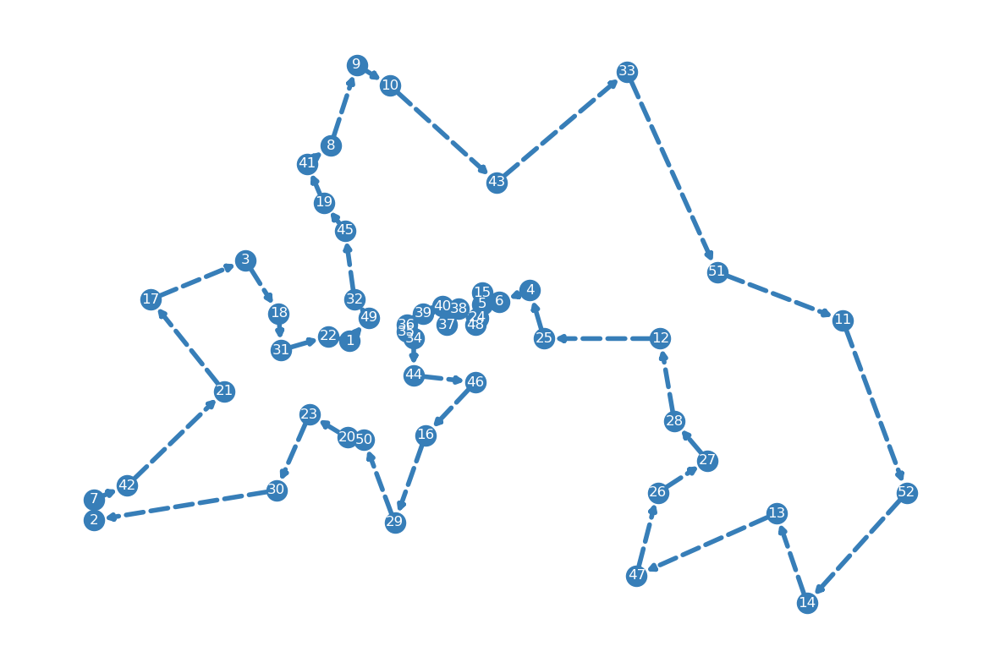

The traveling salesman problem (TSP) is a classic optimization problem in computer science and operations research. The problem can be stated as follows: given a set of cities and the distances between them, what is the shortest possible route that visits each city exactly once and returns to the starting city?
The TSP has many real-world applications, including logistics and transportation planning, circuit board drilling, and DNA sequencing. However, it is a well-known NP-hard problem, meaning that finding an optimal solution is computationally difficult for large instances of the problem. As a result, many heuristic and approximation algorithms have been developed to find suboptimal solutions that are still very good in practice. In this chapter, we present several mathematical formulations of the TSP existing in the literature and implement them using OR-Tools.
6.1 TSP Instances
Before discussing the mathematical models of the TSP, we first provide an introduction to the instances that will be utilized to test various formulations and illustrate the resulting TSP solutions. The TSP is a widely recognized optimization problem that has been studied for several decades. Due to its significance, many benchmarking problem instances of varying sizes are available in literature. In this chapter, we do not aim to solve the most challenging TSP instances, but instead, our objective is to demonstrate how to apply different formulations of the TSP using OR-Tools.
To achieve this objective, we will focus on presenting some of the small-sized instances that can be solved effectively using OR-Tools. These instances are well-documented, which makes them easy to understand and implement in practice. Additionally, they help illustrate the optimization techniques used to solve the TSP, such as branch-and-bound and cutting plane methods. Moreover, small-sized instances allow for quicker computation, making it easier to observe the behavior of different algorithms and identify which formulations are most efficient.
By presenting a range of examples, we aim to provide a clear understanding of how to implement different TSP formulations using OR-Tools, which can be applied to real-world problems in various domains, such as transportation planning and logistics, network design, and circuit board drilling. Additionally, we aim to demonstrate the advantages and limitations of different TSP formulations and algorithms, highlighting which techniques perform well under specific circumstances. By doing so, readers can gain insight into how to apply TSP optimization techniques to their own problems effectively.
6.1.1 TSPLIB
The TSP instances used in this section are sourced from TSPLIB95, a library of TSP benchmark instances. To make it easier to work with these instances, we utilize the tsplib95 Python library, which can be installed using the pip install tsplib95 command.
In the code snippet below, we demonstrate how to use the tsplib95 package to load the ulysses22.tsp problem from a data file downloaded from TSPLIB95. The loaded data can be used to formulate and solve TSP instances using OR-Tools or other optimization tools. The full instance data is provided at the end for reference. By leveraging the tsplib95 package, we can quickly and easily access TSP instances for experimentation and analysis, and focus our efforts on the formulation and optimization aspects of the problem.
import tsplib95# load problemproblem = tsplib95.load('./data/tsp/ulysses22.tsp')# show instanceproblem.as_name_dict()
To get the distance between any pair of nodes, we use the get_weight() function.
print(f'distance between node 1 and 2 = {problem.get_weight(1, 2)}')
distance between node 1 and 2 = 509
6.1.2 Visualize TSP Solution
In this section, our goal is to gain a better understanding of the TSP problem by visualizing the optimal solution found for instances provided by TSPLIB95. To achieve this, we define a class called TspVisualizer in our code that is responsible for displaying the route that connects all nodes in a TSP solution. The TspVisualizer class contains a single function, called show(locations, edges), which accepts two input parameters: locations and edges.
The locations parameter is a dictionary that contains the mapping between location ID and its corresponding coordinates. The edges parameter is a list of edges that form the TSP tour. By calling the show function with the appropriate input parameters, we can visualize the TSP tour and gain an intuitive understanding of what the TSP problem is trying to accomplish. This visualization can be a helpful tool in understanding how the different TSP formulations and algorithms work, and can aid in identifying potential improvements to the solution. The use of the TspVisualizer class allows for easy visualization of the TSP solution and makes it possible to explore and analyze TSP instances in a more meaningful way.
import networkx as nximport numpy as npimport matplotlib as mplimport matplotlib.pyplot as pltclass TspVisualizer:"""visualize a TSP tour """@staticmethoddef show(locations, edges):"""draw TSP tour adapted from https://stackoverflow.com/a/50682819 examples: locations = { 0: (5, 5), 1: (4, 9), 2: (6, 4), } edges = [ (0, 1), (1, 2), (2, 0), ] Args: locations (dict): location id -> (lat, lon) edges (list): list of edges """ G = nx.DiGraph() G.add_edges_from(edges) plt.figure(figsize=(15,10)) colors = mpl.colormaps["Set1"].colors color_idx =1 color = np.array([colors[color_idx]]) nx.draw_networkx_nodes(G, locations, nodelist=[x[0] for x in edges], node_color=color) nx.draw_networkx_edges(G, locations, edgelist=edges, width=4, edge_color=color, style='dashed')# labels nx.draw_networkx_labels(G, locations, font_color='w', font_size=12, font_family='sans-serif')#print out the graph plt.axis('off') plt.show()
Now let’s load the optimal solution for the aforementioned instance and show its content below.
Figure 6.1: Optimal tour of the ulysses22 instance
Let’s put this visualization procedure into a dedicated function, as is given below.
import tsplib95def visualize_tsp(instance_name: str):# load problem problem = tsplib95.load(f'./data/tsp/{instance_name}.tsp') solution = tsplib95.load(f'./data/tsp/{instance_name}.opt.tour') locations = problem.node_coords tour = solution.tours[0] edges = []for i inrange(len(tour) -1): edges.append((tour[i], tour[i +1])) edges.append((tour[-1], tour[0])) edges = []for i inrange(len(tour) -1): edges.append((tour[i], tour[i +1])) edges.append((tour[-1], tour[0])) TspVisualizer.show(locations, edges)
Figure 6.2 and Figure 6.3 show the optimal tours for the berlin52 and pr76 instances, respectively.
visualize_tsp('berlin52')
Figure 6.2: Optimal tour of the berlin52 instance
visualize_tsp('pr76')

Figure 6.3: Optimal tour of the pr76 instance
6.2 Problem Description
Let \(\mathcal{G} = (\mathcal{V}, \mathcal{A})\) be an undirected complete graph, where \(V = \{1, 2, \cdots, n\}\) represents a set of \(n\) cities or vertices, and \(\mathcal{A} = \{(i, j)\ |\ i, j \in \mathcal{V}, i \neq j\}\) represents the set of edges connecting these cities. The edges in \(\mathcal{A}\) have weights or distances associated with them, \(c_{ij}\), representing the distances or costs to travel between pairs of cities.
The objective of the TSP is to find the shortest possible closed tour that visits each city in \(\mathcal{V}\) exactly once and returns to the starting city, while obeying the following constraints:
Each city must be visited exactly once: The tour must include all the cities in \(\mathcal{V}\), and each city must be visited exactly once during the tour.
The tour must be closed: The last city visited in the tour must be the same as the starting city, forming a closed loop.
6.3 Model 1 - DFJ
The first formulation was proposed by Dantzig, Fulkerson, and Johnson (1954). It uses the following decision variables:
\(x_{ij}\): a binary variable that equals 1 if arc \((i, j) \in \mathcal{A}\) shows up in the optimal solution, 0 otherwise
This specific TSP formulation aims to find the optimal route with the shortest total distance. To ensure that each node is visited exactly once, constraints \(\eqref{tsp1-cons1}\) and \(\eqref{tsp1-cons2}\), also known as degree constraints, are used. Another set of constraints \(\eqref{tsp1-cons3}\), called subtour elimination constraints, ensure that the solution does not contain any subtours. Subtours are smaller cycles within the larger route that violate the requirement of visiting each city exactly once. Two examples of solutions with subtours are shown in figures Figure 6.4 and Figure 6.5. While these solutions satisfy the degree constraints, they violate the subtour elimination constraints. A subtour contains the same number of edges (or arcs) as nodes, so limiting the number of edges to be less than the number of nodes can help to eliminate subtours. Furthermore, because of the presence of degree constraints, subtours with only one node cannot exist, and similarly, subtours with \(n-1\) nodes are also impossible. Therefore, it is acceptable to define the subtour elimination constraints only for subtours that contain between 2 and \(n-2\) nodes.
To understand this, observe that the value of \(|S|\) can be calculated as the sum of two terms: the sum of the decision variables \(x_{ij}\) for all edges \((i,j)\) that are included in the subset, and the sum of the decision variables \(x_{ij}\) for all edges that cross the boundary of the subtour, that is, \(|S| = \sum_{i, j \in S, \ (i, j) \in \mathcal{A}} x_{ij} + \sum_{i \in S}\sum_{j \notin S} x_{ij}\). This means that the constraints \(\eqref{tsp1-cons3}\) and \(\eqref{tsp1-cons5}\) are interchangeable, as they represent the same condition in different forms.
To simplify the implementation of different TSP formulations that will be presented in the following sections, we have created a base class called TspModel in the code below. This class contains the instance information that needs to be solved, as well as several helper functions. Within the class definition, the attribute _node_list holds the list of nodes that must be visited by the TSP tour. The attribute _node_coords is a dictionary that stores the location information for each node. Finally, the attribute _distance is another dictionary that provides the distance between any pair of nodes. The read_inputs() function, defined between lines 15 and 31, takes a TSP problem instance and extracts the necessary information for solving the problem later. The get_combinations() function, defined between lines 33 and 34, generates all possible combinations of nodes with the specified size.
To implement the TSP model using OR-Tools, we define the TspModelV1 class that inherits from the base class TspModel. The constructor initializes a solver object and defines attributes to store decision variables and the optimal solution. The _create_variables() function creates binary decision variables for every arc in the problem, while the _create_objective() function calculates the total traveling cost. Degree constraints are defined in the _create_degree_constraints() function, while the subtour elimination constraints are defined in the _create_subtour_elimination_constraints() function. The build_model() function needs to be called before optimize() to construct the model.
from itertools import productfrom ortools.linear_solver import pywraplpclass TspModelV1(TspModel):def__init__(self, name='Tspmodel_v1'):super().__init__(name)self._solver = pywraplp.Solver.CreateSolver('SCIP')self._var_x =Noneself._opt_obj =Noneself._opt_x =Noneself._opt_route =Nonedef build_model(self):self._create_variables()self._create_objective()self._create_degree_constraints()self._create_subtour_elimination_constraints()def optimize(self, enable_output: bool):if enable_output: self._solver.EnableOutput() status =self._solver.Solve()if status is pywraplp.Solver.OPTIMAL:self._retrieve_opt_solution()self._retrieve_opt_route()def _create_variables(self):self._var_x = {}for i inself._node_list:self._var_x[i] = { j: self._solver.BoolVar('x_{i, j}')for j inself._node_listif j != i }def _create_objective(self): node_list =self._node_list expr = [self._distance[i][j] *self._var_x[i][j]for i, j in product(node_list, node_list)if i != j]self._solver.Minimize(self._solver.Sum(expr))def _create_degree_constraints(self):for i inself._node_list: out_expr = [self._var_x[i][j]for j inself._node_listif j != i ] in_expr = [self._var_x[j][i]for j inself._node_listif j != i ]self._solver.Add(self._solver.Sum(out_expr) ==1)self._solver.Add(self._solver.Sum(in_expr) ==1)def _create_subtour_elimination_constraints(self): num_nodes =self.num_nodesfor size inrange(2, num_nodes -1): combinations =self.get_combinations(size)for comb in combinations: expr = [self._var_x[i][j]for i, j in product(comb, comb)if i != j]self._solver.Add(self._solver.Sum(expr) <=len(comb) -1)def _retrieve_opt_solution(self):self._opt_obj =float(self._solver.Objective().Value())self._opt_x = {}for i inself._node_list:self._opt_x[i] = { j: round(self._var_x[i][j].solution_value())for j inself._node_listif j != i }print(f'optimal value = {self._opt_obj:.2f}')def _retrieve_opt_route(self):self._opt_route = [] route_start =list(self._opt_x.keys())[0] edge_start = route_startwhileTrue:for n inself._opt_x[edge_start]:ifself._opt_x[edge_start][n] ==0: continue edge_end = nself._opt_route.append((edge_start, edge_end))breakif edge_end == route_start: break edge_start = edge_enddef show_opt_route(self): TspVisualizer.show(self._node_coords, self._opt_route)def show_model_info(self):print(f"Number of variables: {self._solver.NumVariables()}")print(f"Number of constraints: {self._solver.NumConstraints()}")
Now we use the TspModelV1 class to solve the burma14 instance and plots the optimal solution found by the OR-Tools in Figure 6.6.
Number of variables: 182
Number of constraints: 16382
optimal value = 3323.00
Figure 6.6: Optimal route for the burma14 instance
6.4 Model 2 - MTZ
In this formulation, an alternative way of modeling the subtour elimination constraints was proposed by Miller, Tucker, and Zemlin (1960). The model uses two types of decision variables:
\(x_{ij}\): a binary variable that equals 1 if arc \((i, j) \in \mathcal{A}\) shows up in the optimal solution, 0 otherwise
\(u_i\): a continuous variable for \(i \in \mathcal{V} \backslash \{1\}\)
In this formulation, constraints \(\eqref{tsp2-cons1}\) and \(\eqref{tsp2-cons2}\) serve as the degree constraints requiring that there is only one arc entering and leaving a node. Constraints \(\eqref{tsp2-cons3}\) are the new subtour elimination constraints. To see how constraints \(\eqref{tsp2-cons3}\) effectively forbid subtours, let’s examine the example below in Figure 6.7. In the figure, nodes 5 and 6 form a subtour and constraints \(\eqref{tsp2-cons3}\) become:
The code below gives the complete program of the formulation. The new variable \(u_i\) is defined in function _create_variables() and the subtour elimination constraints are updated in function _create_subtour_elimination_constraints().
from itertools import productfrom ortools.linear_solver import pywraplpclass TspModelV2(TspModel):def__init__(self, name='Tspmodel_v2'):super().__init__(name)self._solver = pywraplp.Solver.CreateSolver('SCIP')self._var_x =Noneself._var_u =Noneself._opt_obj =Noneself._opt_x =Noneself._opt_route =Nonedef build_model(self):self._create_variables()self._create_objective()self._create_degree_constraints()self._create_subtour_elimination_constraints()def optimize(self, enable_output: bool):if enable_output: self._solver.EnableOutput() status =self._solver.Solve()if status is pywraplp.Solver.OPTIMAL:self._retrieve_opt_solution()self._retrieve_opt_route()def _create_variables(self):self._var_x = {}for i inself._node_list:self._var_x[i] = { j: self._solver.BoolVar(f'x_{i, j}')for j inself._node_listif j != i }self._var_u = { i: self._solver.NumVar(1, self.num_nodes, f'v_{i}')for i inself._node_listif i !=1 }def _create_objective(self): node_list =self._node_list expr = [self._distance[i][j] *self._var_x[i][j]for i, j in product(node_list, node_list)if i != j]self._solver.Minimize(self._solver.Sum(expr))def _create_degree_constraints(self):for i inself._node_list: out_expr = [self._var_x[i][j]for j inself._node_listif j != i ] in_expr = [self._var_x[j][i]for j inself._node_listif j != i ]self._solver.Add(self._solver.Sum(out_expr) ==1)self._solver.Add(self._solver.Sum(in_expr) ==1)def _create_subtour_elimination_constraints(self): num_nodes =self.num_nodesfor i, j in product(self._node_list, self._node_list):if i == j: continueif i ==1or j ==1: continueself._solver.Add(self._var_u[i] -self._var_u[j] + (num_nodes -1) *self._var_x[i][j] <= num_nodes -2)def _retrieve_opt_solution(self):self._opt_obj =float(self._solver.Objective().Value())self._opt_x = {}for i inself._node_list:self._opt_x[i] = { j: round(self._var_x[i][j].solution_value())for j inself._node_listif j != i }print(f'optimal value = {self._opt_obj:.2f}')def _retrieve_opt_route(self):self._opt_route = [] route_start =list(self._opt_x.keys())[0] edge_start = route_startwhileTrue:for n inself._opt_x[edge_start]:ifself._opt_x[edge_start][n] ==0: continue edge_end = nself._opt_route.append((edge_start, edge_end))breakif edge_end == route_start: break edge_start = edge_enddef show_opt_route(self): TspVisualizer.show(self._node_coords, self._opt_route)def show_model_info(self):print(f"Number of variables: {self._solver.NumVariables()}")print(f"Number of constraints: {self._solver.NumConstraints()}")
We now use this formulation to solve the burma14 instance and show its optimal solution in Figure 6.8.
In this formulation, the constraints \(\eqref{tsp3-cons3}\) - \(\eqref{tsp3-cons5}\) are the subtour elimination constraints. Specifically, constraints \(\eqref{tsp3-cons3}\) make sure that the amount of flow on any arc \((i, j)\) is at most \(n - 1\) when the arc is active. Constraints \(\eqref{tsp3-cons4}\) state that there is a total of \(n - 1\) flowing out of the source node 1. Constraints \(\eqref{tsp3-cons5}\) require that the incoming flow is 1 unit bigger than the outgoing flow at any node other than the source node 1. To see how this prevents subtours, we’ll use Figure 6.10 as an example.
In this formulation, constraints \(\eqref{tsp4-cons3}\) - \(\eqref{tsp4-cons8}\) together serve as the subtour elimination constraints. To better understand the two commodity flow formulation, we’ll use Figure 6.15 as an example. At the source node 1, there is \(n-1\) units of commodity 1 leaving the node and there is no unit of commodity 2 leaving it. At each subsequent node, the amount of commodity 1 decreases by 1 unit while the amount of commodity 2 increases by 1 unit. On any arc in the tour, the total amount of commodities is always \(n - 1\).
Number of variables: 7956
Number of constraints: 2912
optimal value = 7542.00

Figure 6.18: Optimal route for the berlin52 instance
6.7 Model 5 - Multi-Commodity Flow
The model uses two types of decision variables:
\(x_{ij}\): a binary variable that equals 1 if arc \((i, j) \in \mathcal{A}\) shows up in the optimal solution, 0 otherwise
\(y_{ij}^k\): a continuous variable representing the flow of commodity \(k\) on arc \((i, j) \in \mathcal{A}\), \(k \in \mathcal{V} \backslash \{1\}\)
The complete formulation of the problem is presented below. To understand this formulation, let’s imagine that node 1 is the source node in the graph, and each of the remaining nodes demands one unit of different commodities. For instance, node 2 requires one unit of commodity 2, node 3 requires one unit of commodity 3, and so on. The problem can then be expressed as finding the most cost-effective graph that can handle the flow of all \(n-1\) commodities. Constraints \(\eqref{tsp5-cons1}\) and \(\eqref{tsp5-cons2}\) are the same as in other formulations. Constraints \(\eqref{tsp5-cons3}\) state that the arc connecting nodes (i,j) must be active to allow any commodity flow, essentially acting as a capacity constraint that limits the flow on the arc. Constraints \(\eqref{tsp5-cons4}\) indicate that exactly one unit of each commodity k flows out of the source node 1. Constraints \(\eqref{tsp5-cons5}\) require that no commodity flows into the source node 1. Constraints \(\eqref{tsp5-cons6}\) ensure that one unit of commodity k flows into node k, and constraints \(\eqref{tsp5-cons7}\) require that there is no flow of commodity k out of node k. Finally, constraints \(\eqref{tsp5-cons8}\) are flow conservation constraints that guarantee that the incoming flow is equal to the outgoing flow at all nodes except the source node for every commodity k.
Number of variables: 137904
Number of constraints: 138110
optimal value = 7542.00
Figure 6.21: Optimal route for the berlin52 instance
6.8 Performance Comparison
We give in Table 6.1 the computational times required to find the optimal solutions for different instances. It is by no means a thorough or comprehensive performance comparison, as it is only based on one run and on a few instances. It can be seen from the table that the single commodity flow formulation seems to perform the best among all the five formulations.
Table 6.1: Computational time comparison of the five formulations
Instance
Model 1
Model 2
Model 3
Model 4
Model 5
burma14
2.9s
0.4s
0.2s
0.6s
0.3s
ulysses22
-
7m25s
7.2s
19.8s
2.8s
berlin52
-
-
8.6s
13.8s
18m23s
pr76
-
-
10m51s
-
-
Dantzig, G., R. Fulkerson, and S. Johnson. 1954. “Solution of a Large-ScaleTraveling-SalesmanProblem.”Journal of the Operations Research Society of America 2 (4): 393–410. https://doi.org/10.1287/opre.2.4.393.
Miller, C. E., A. W. Tucker, and R. A. Zemlin. 1960. “Integer ProgrammingFormulation of TravelingSalesmanProblems.”Journal of the ACM 7 (4): 326–29. https://doi.org/10.1145/321043.321046.